PROYECTO FINAL: ARQUITECTO CLOUD
Sistemas Operativos 750001C — Semestre 1 - 2026
Universidad del Valle
Equipo y Configuración
| Nombre | Código | Rol |
|---|---|---|
| Diana Marcela Henao Betancourt | 202478024 |
Arquitecta Cloud (Todos los componentes) |
- Grupo asignado: Grupo 1
- Distribución gráfica: Ubuntu 24.04 LTS
- Distribución consola: Debian 13.5
- Imagen Docker base: ubuntu:24.04
Componente 1: Virtualización con Linux
Instalación y particionamiento de entornos operativos mediante máquinas virtuales (VM Gráfica + VM Consola).
Evidencias Fotográficas
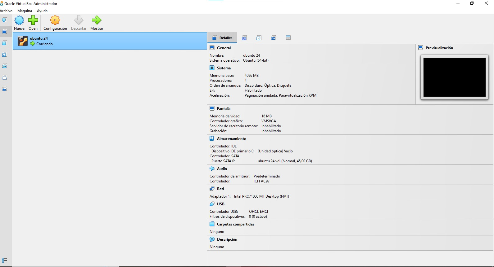
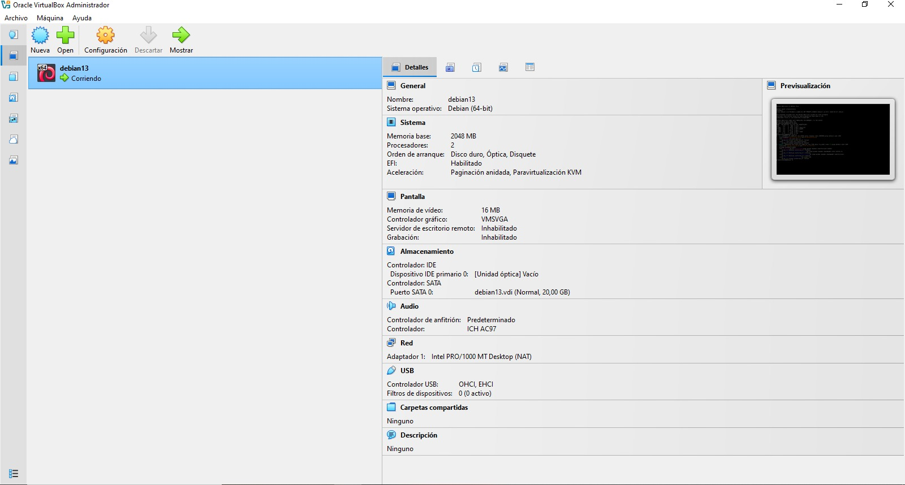
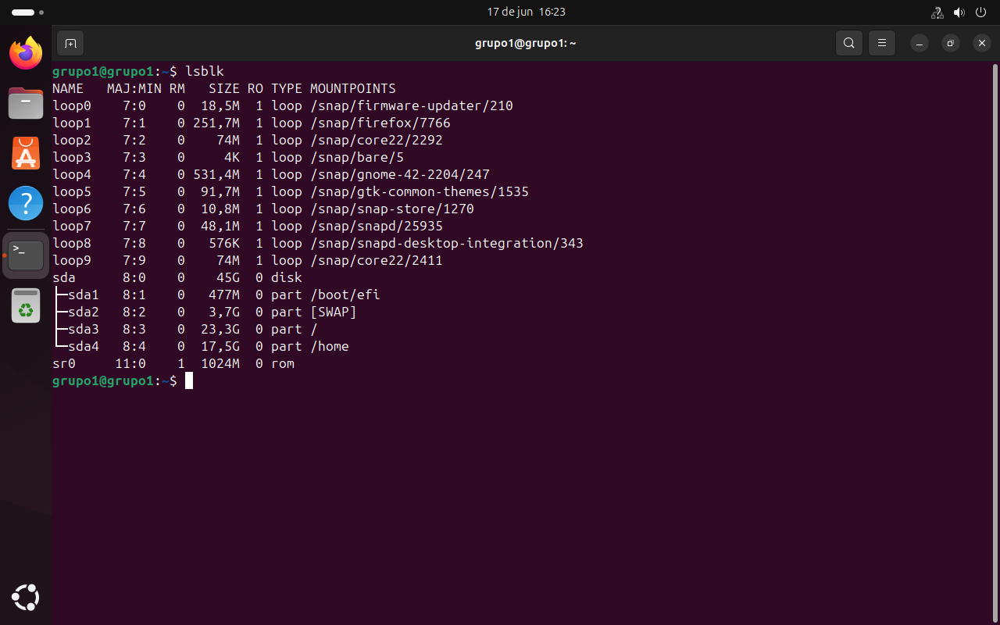
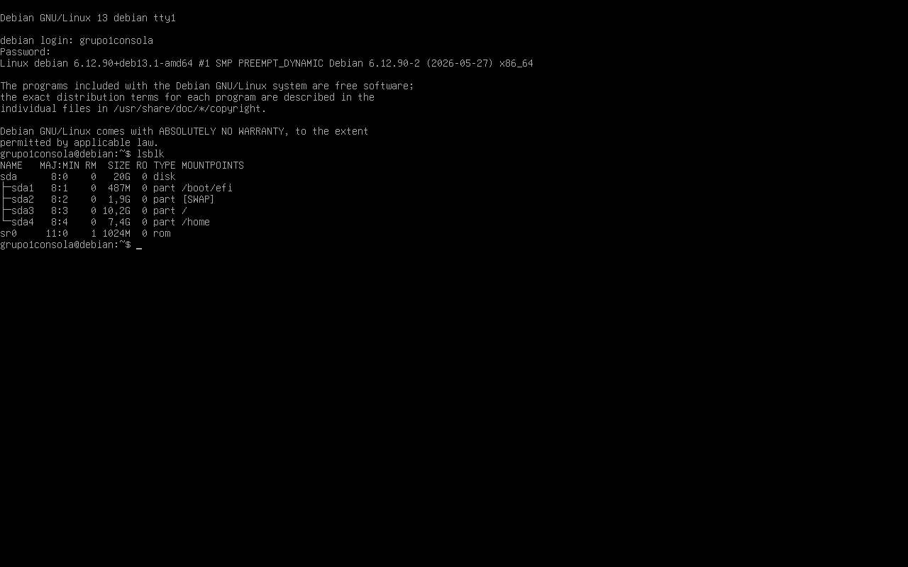
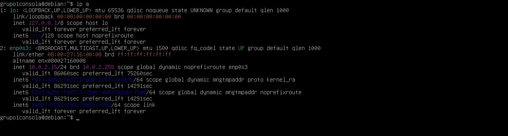
Comandos Principales
ip a # Ver interfaces de red
lsblk # Ver particiones de disco
ssh usuario@ip_vm_consola # Conectar por SSH (No realizado por entorno NAT)Componente 2: Contenedores Docker
Implementación de microservicios: Frontend corriendo en Nginx (puerto 80) y Backend en Python HTTP (puerto 5000).
Evidencias Fotográficas
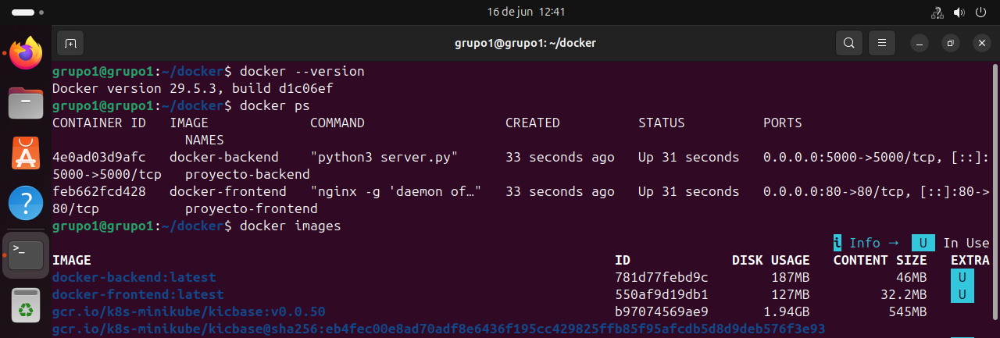
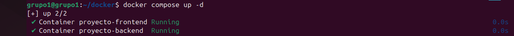
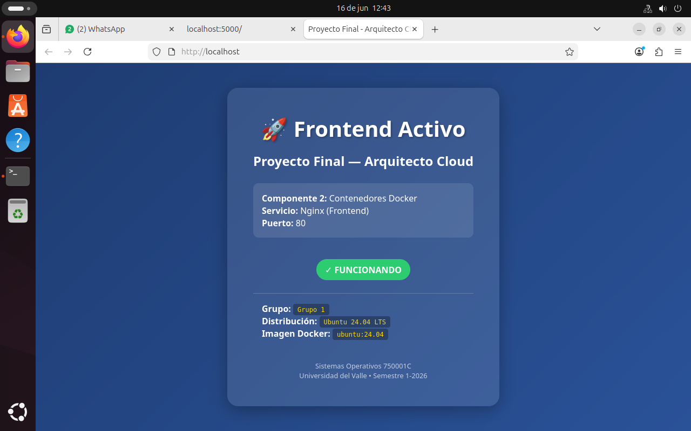
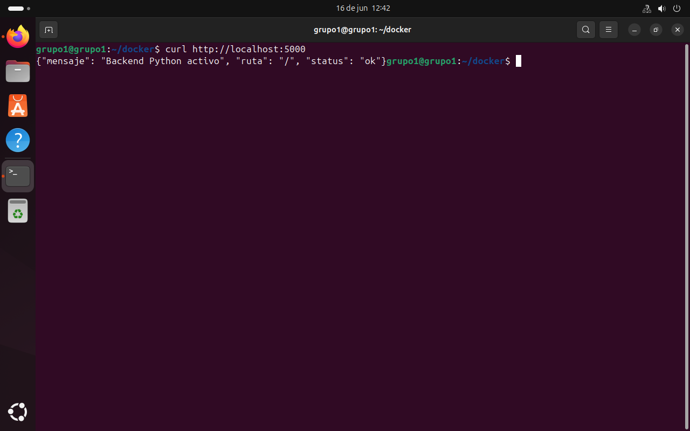
Comandos Principales
docker compose up -d # Desplegar contenedores
docker ps # Listar contenedores activos
docker images # Listar imágenes creadas
curl http://localhost # Probar frontend
curl http://localhost:5000 # Probar backendComponente 3: Orquestación con Kubernetes
Gestión del cluster local mediante la herramienta Minikube.
Manifiestos utilizados: deployment.yaml (Nginx 2 réplicas) | service.yaml (NodePort 30080)
Evidencias Fotográficas
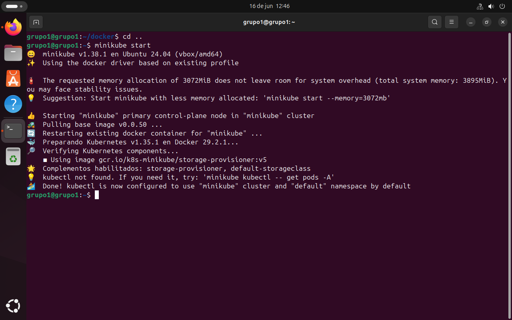
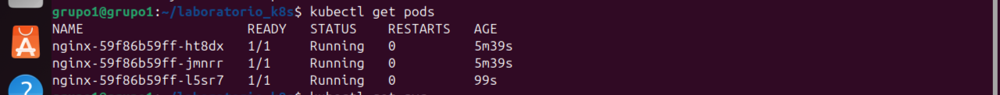
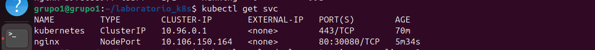
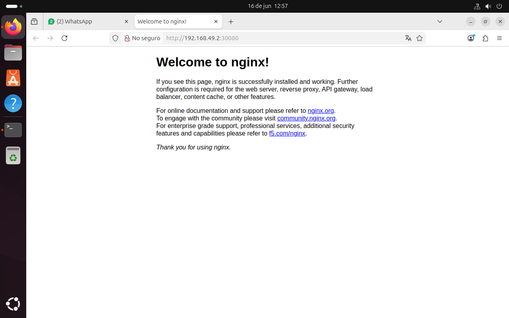
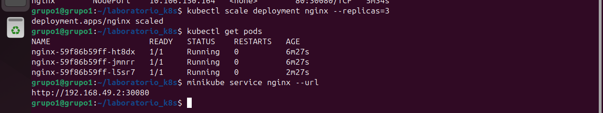
Comandos Principales
minikube start
kubectl apply -f deployment.yaml
kubectl apply -f service.yaml
kubectl get pods
kubectl scale deployment nginx --replicas=3
minikube service nginx --urlComponente 4: Sitio Web e Infraestructura
Documentación integral y centralizada del proyecto.
Video Demostrativo
Enlace directo al video: YouTube.com
Diagrama de Arquitectura

Conclusiones
- Aprendizaje principal: Se comprendió el flujo de despliegue moderno de aplicaciones, entendiendo cómo se pasa de una máquina virtual (infraestructura base), a aislar aplicaciones en Docker y finalmente automatizar su disponibilidad con Kubernetes.
- Dificultad y solución: La principal limitación radicó en las restricciones de red del laboratorio de la universidad que bloqueaban el adaptador puente. Se solucionó adaptando toda la arquitectura mediante enrutamientos internos bajo la red NAT.
- Recomendación: Para proyectos futuros, es fundamental estructurar los manifiestos declarativos de Kubernetes con anterioridad y validar la compatibilidad de puertos locales para evitar conflictos de red durante el escalado de réplicas.